Research first
Training is organised around authentic biological questions and the workflows researchers actually need.
Practical bioinformatics for research
BCRTI develops research-aligned bioinformatics micro-credentials that help HDR students, early-career researchers and research teams build the confidence to analyse real biological data independently.
Why BCRTI
Modern biological research increasingly depends on computational analysis, yet many researchers encounter sequencing data before they have had the opportunity to develop practical bioinformatics skills. BCRTI turns that gap into a structured capability pathway: understand the data, learn the tools, run the workflow, interpret the evidence and reproduce the analysis.
Training is organised around authentic biological questions and the workflows researchers actually need.
Learners build capability by working with data, commands, tools, outputs and interpretation—not by watching passively.
Good computational habits, documentation and transparent workflows are embedded from the beginning.
Training portfolio
Start with foundations, then progress into specialised analytical workflows. Courses with live learner pages are marked Available now.
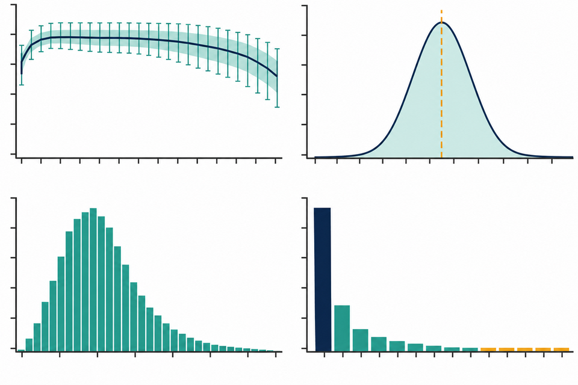
FOUNDATIONS
Ready to analyse DNA sequencing data?
Build practical skills to navigate bioinformatics environments and analyse sequencing data.
DNA Data | FastQ | Linux | WSL | Bash
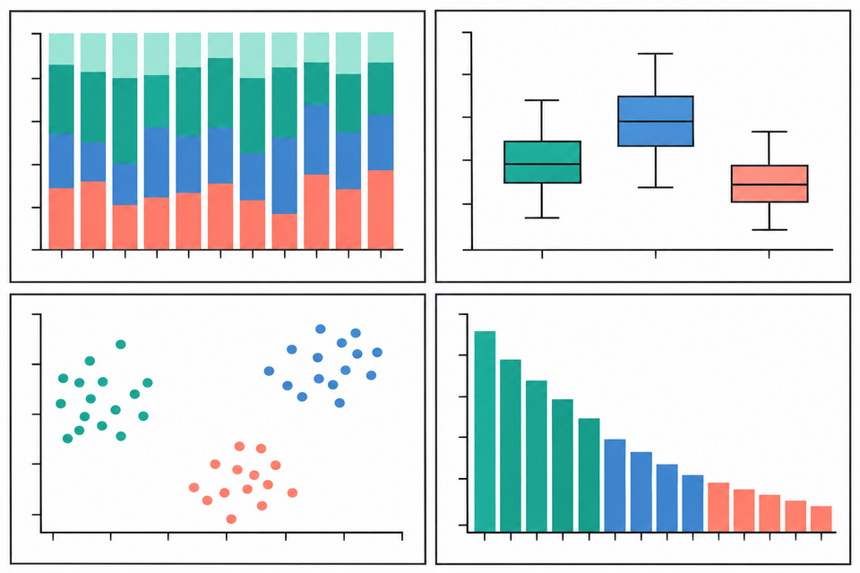
MICROBIOME
Ready to explore your microbiome data?
Build practical skills to profile microbial communities, compare diversity and patterns.
16S | QIIME 2 | ASVs | Taxonomy | Diversity
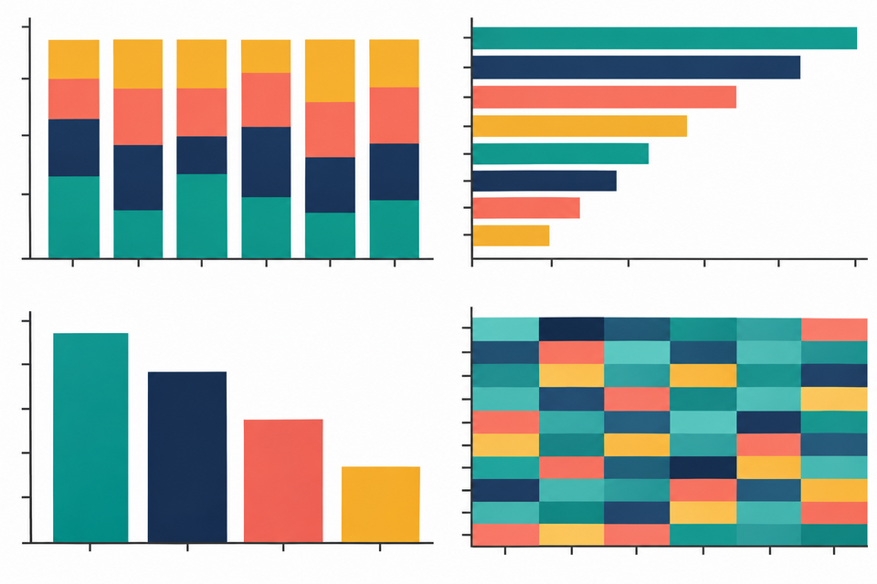
METAGENOMICS
Ready to unlock metagenomic data?
Build practical skills to profile microbial communities and explore functional potential.
Shotgun | Taxonomy | Functions | AMR
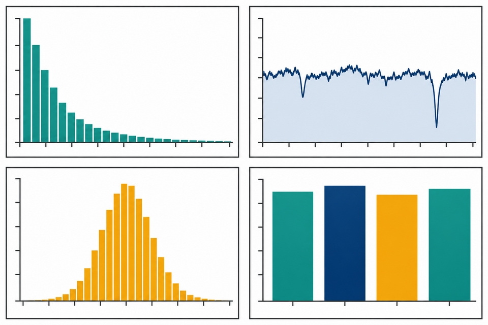
GENOMICS
Ready to build and explore your genome?
Build practical skills to assemble genomes, assess quality and annotate features.
Assembly | QC | Annotation | Genes | Genomes
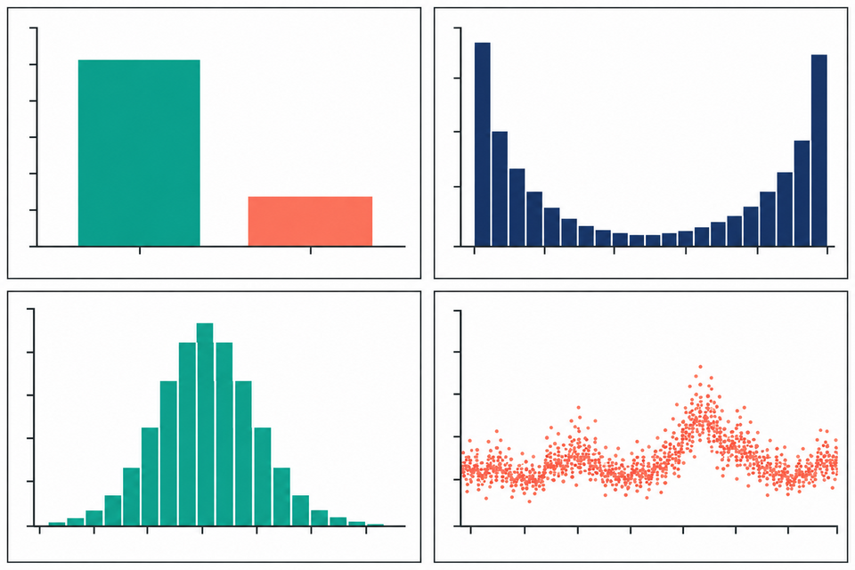
VARIANTS
Ready to discover genomic variations?
Build practical skills to map reads, identify variants, assess quality and interpret genomic variation.
Mapping | SNPs | Indels | VCF | Annotation
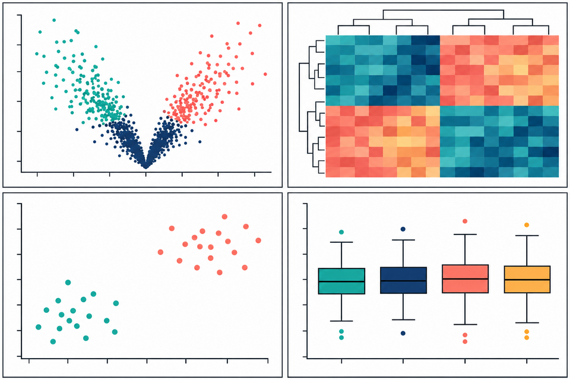
TRANSCRIPTOMICS
Ready to uncover DEGs?
Build practical skills to analyse RNA-seq data, identify DEGs and interpret biological pathways.
RNA-seq | R | DESeq2 | DEGs | Pathways
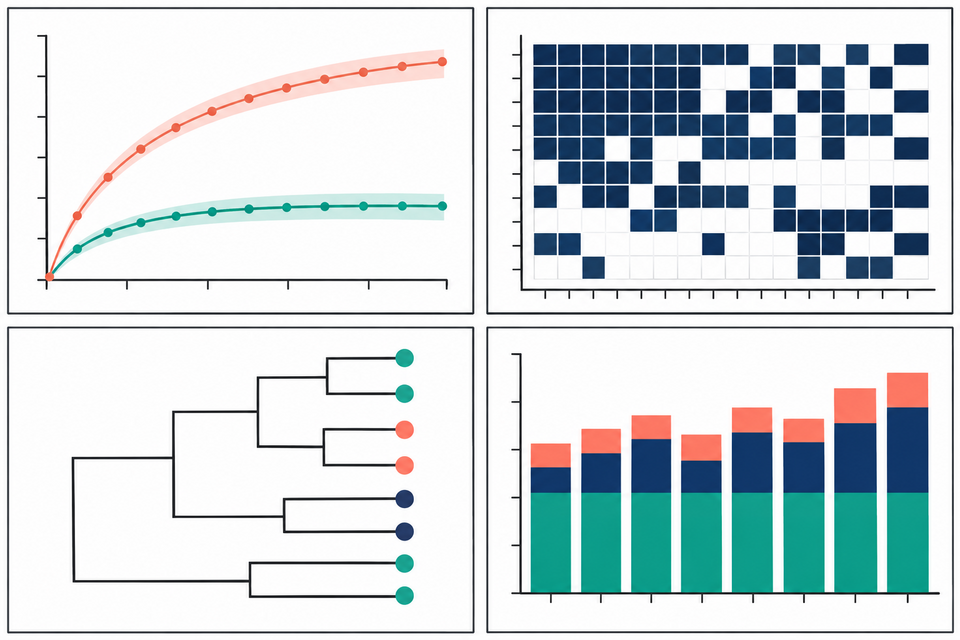
COMPARATIVE GENOMICS
Ready to explore genomic diversity?
Build practical skills to identify core, accessory and unique genes across multiple genomes.
Core Genome | Accessory Genome | Diversity
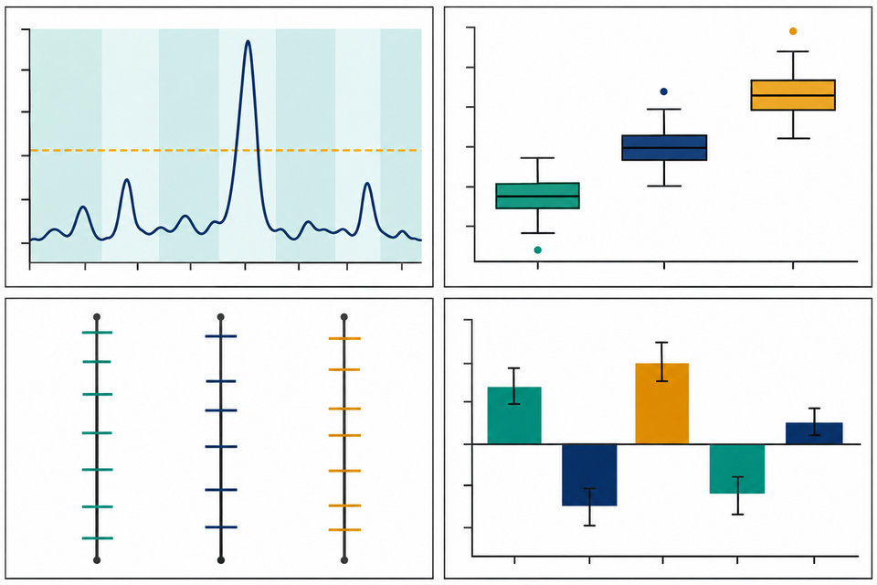
QUANTITATIVE GENETICS
Connect genotype with phenotype.
Map quantitative traits, detect genomic regions and identify candidate genes.
Phenotypes | Markers | QTL | Candidate Genes
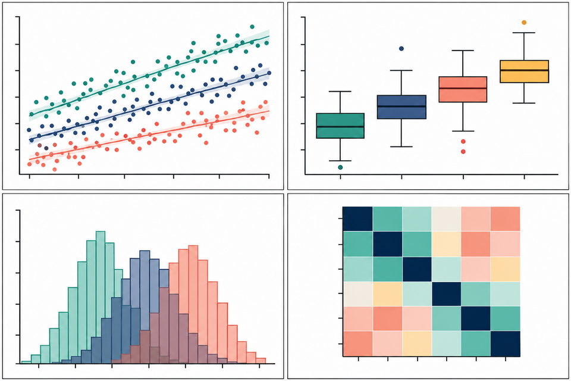
DATA SKILLS
Ready to turn biological data into insight?
Build practical skills to organise, analyse, visualise and report biological data reproducibly.
R | RStudio | ggplot2 | Data Visualisation
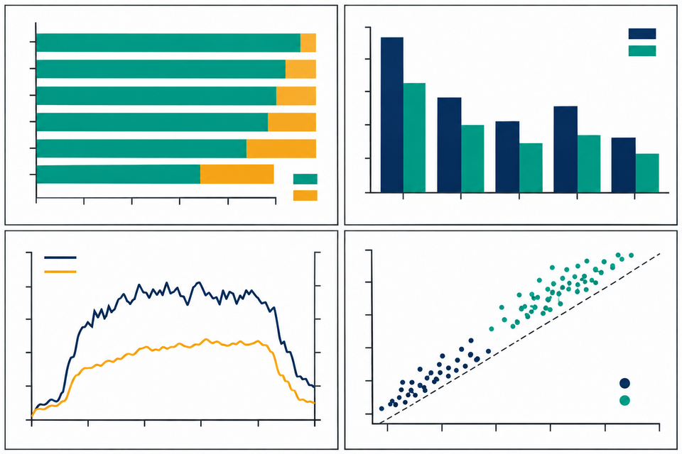
REPRODUCIBILITY
Automate your bioinformatics analyses.
Build practical skills to create reproducible, portable and scalable computational workflows.
Pipeline | Nextflow | Containers | Automation
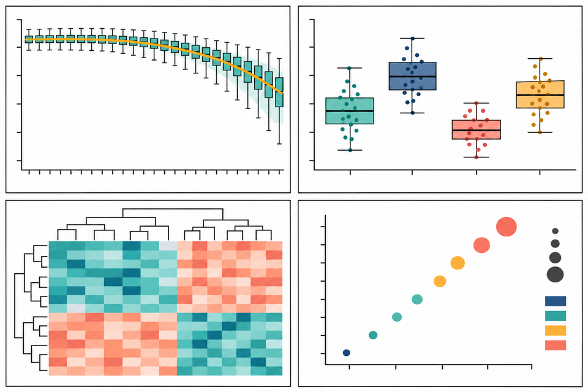
TAILORED TRAINING
Your research. Your data. Your capability.
BCRTI develops and delivers focused bioinformatics training tailored to your needs.
Custom Training | New Capability
The BCRTI approach
Each learning experience is designed to move participants from conceptual understanding to independent, reproducible analysis.
Connect the biological question to the data type and analytical strategy.
Understand files, metadata, computing environments and quality.
Run a structured workflow using research-relevant tools.
Translate analytical outputs into defensible biological evidence.
Document, organise and communicate an analysis so it can be repeated.
Capability in practice
BCRTI is built for researchers who need more than software demonstrations: they need a pathway from first principles to confident application in their own projects.
Build the computational independence needed to progress sequencing-based research.
Add transferable analytical capability and reproducible practices to an existing biological skill set.
Create shared analytical understanding and more consistent, transparent computational workflows.
Founder & Academic Lead
Founder, BCRTI · Bioinformatics Capability and Research Training Institute
Dr Prodhan is a molecular biologist and bioinformatician whose own transition into bioinformatics shaped the philosophy behind BCRTI. During his JSPS Postdoctoral Fellowship in Japan, he began systematically documenting every computational analysis he learned and applied—turning the challenge of learning bioinformatics into a structured, hands-on journey from coding fundamentals to reproducible research workflows. Those learning notes gradually evolved into Bioinformatics Core, an expanding practical resource spanning Linux, R, sequencing data, genomics, microbiome analysis and workflow development. That journey demonstrated a principle that now sits at the heart of BCRTI: complex computational skills become achievable when they are broken into practical, purposeful and reproducible steps. BCRTI grew from that philosophy—to help students and researchers build not simply bioinformatics knowledge, but the confidence and capability to analyse their own data independently.
BCRTI is independently founded and led by Dr Prodhan. Academic affiliations are provided for biographical context and do not imply that BCRTI is a program of, or operated on behalf of, any affiliated institution.
Career opportunities
Research tool
Note: Access, quotas, pricing and eligibility can change. Confirm current requirements with the provider.
Training · collaboration · capability
For micro-credential delivery, research training or collaboration enquiries, contact BCRTI.